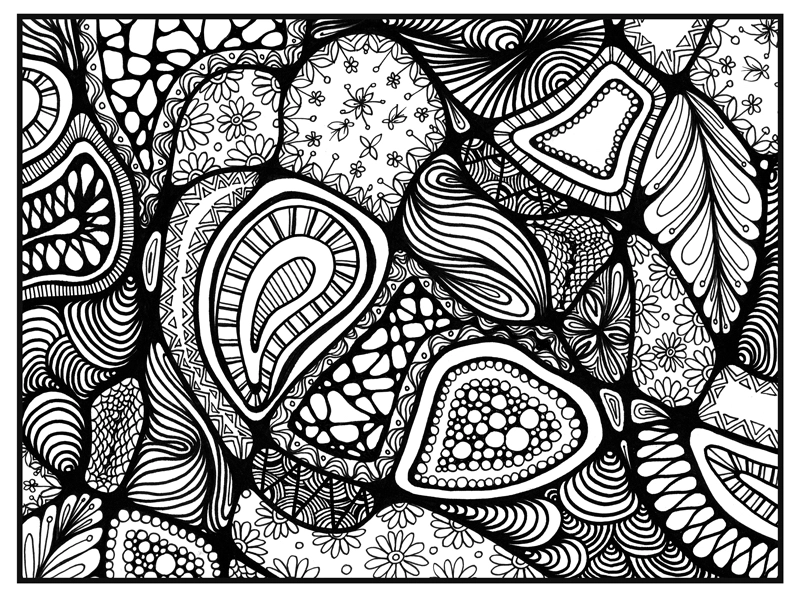

СКІЛЬКИ ПРОЙДЕ, ПЕРШ НІЖ ТИ ПІДНІМЕШ ГОЛОВУ?
8 абсурдних ситуацій. 1 квитанція втраченого часу. І патерн, підібраний під твій рівень глибини.


АРТ
Без обіцянок просвітлення. Жодної відповідальності за охололий чай і пропущені повідомлення.